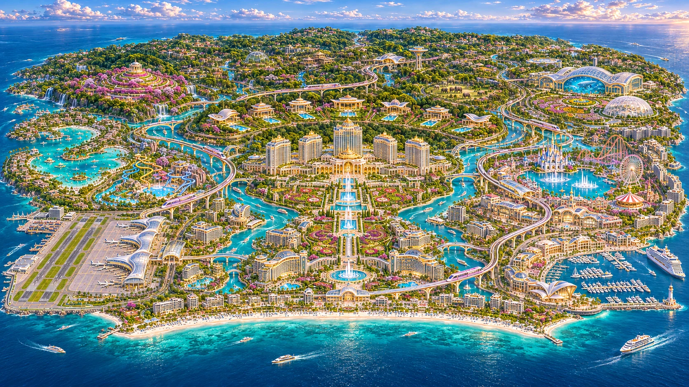
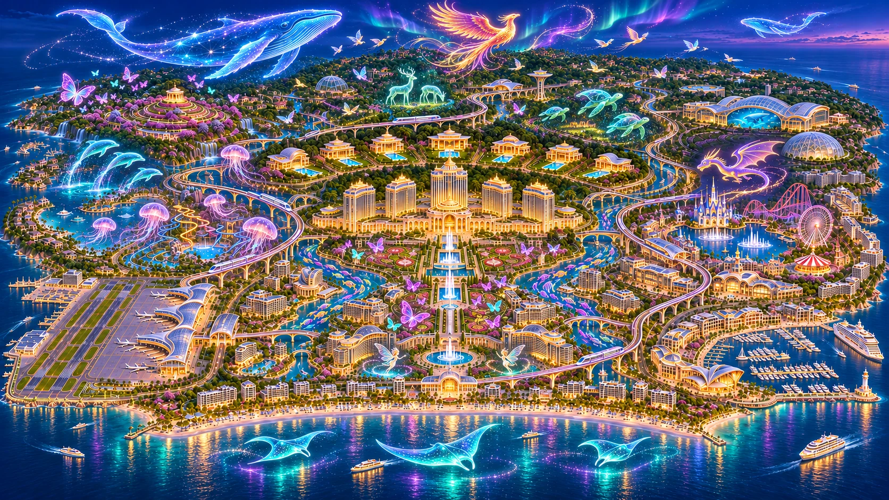
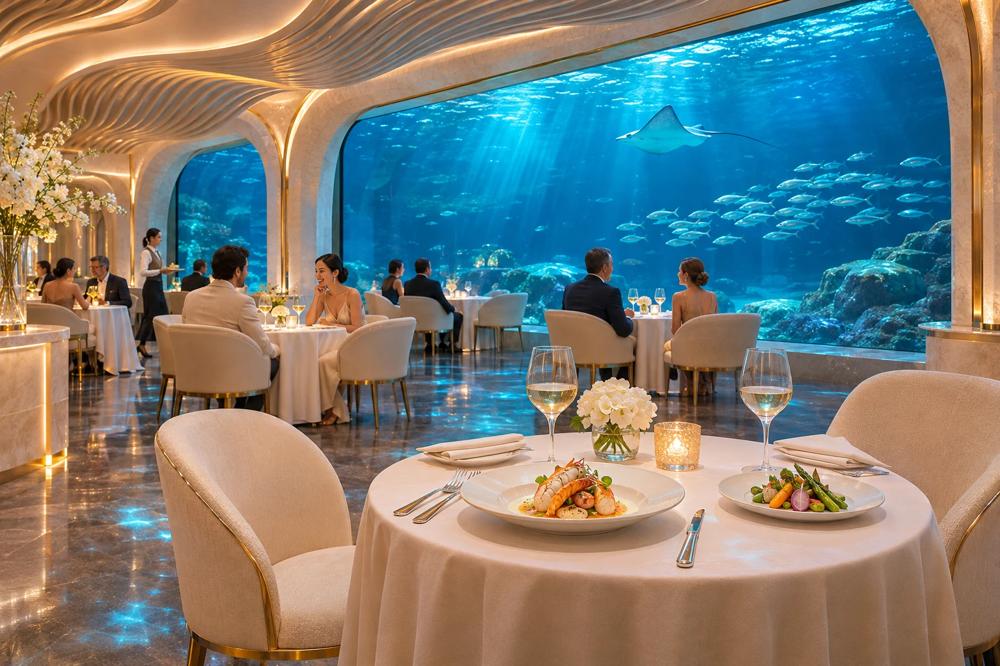
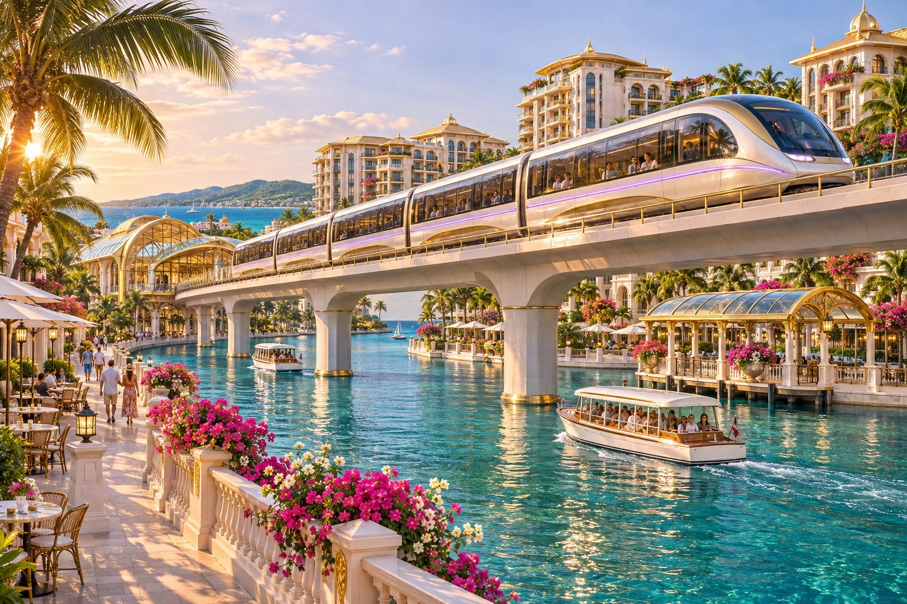

エデン・パレス
水と花に迎えられる、島の象徴。宮殿のような佇まいと、穏やかな時間に身を委ねて。

WELCOME TO EDEN
きらめく海、花々に彩られた運河、空へと続く宮殿。
約120km²の島に広がるのは、心のままに過ごすための世界です。
何もしない贅沢も。初めて出逢う驚きも。
エデンアイランドで、あなただけの物語が始まります。
STAY IN WONDER
水と花に迎えられる、島の象徴。宮殿のような佇まいと、穏やかな時間に身を委ねて。
窓の向こうに広がる青。眠りにつくまで、続いてゆく夢。
庭を渡る風と、自分たちだけの静けさを。

WHEN THE ISLAND BEGINS TO DREAM
空を泳ぐ光の生き物。水面に咲く、色とりどりの物語。
島全体を舞台にしたホログラムが、忘れられない夜を紡ぎます。
FOLLOW YOUR CURIOSITY
PLAY & ADVENTURE
ウォーターパークと遊園地。笑い声に誘われて、予定のない冒険へ。
NATURE & DISCOVERY
海の生命、動物たち、四季を感じる庭園。驚きのすぐ隣に、安らぎがあります。
SHOWS & FANTASY
光のアリーナから華やかなカーニバルまで。胸の高鳴る瞬間を、目の前で。

A TASTE OF EDEN
03 — DINING海の青を眺めながらの晩餐。
夕映えの運河を見下ろすダイニング。
香りと笑顔に満ちたフードマーケット。
その日の気分が、次の美食への道しるべです。
THE JOURNEY IS PART OF THE STAY

水面を見下ろす列車、ゆっくりと街を巡る船。違う眺めを楽しみながら、次の目的地へ。
珊瑚と魚たちを眺めながら過ごす、特別な移動時間。
運河沿いの専用ルートを、庭園に浮かぶように滑る小さなラウンジ。
POSTCARDS FROM EDEN
YOUR OWN EDEN
気分を選んで、あなただけの滞在を思い描いてみてください。
STAY INSPIRATION · 01
ヴィラで遅めの朝を迎えたら、運河の船で庭園へ。午後は海中ラウンジでお茶を楽しみ、夜は静かな丘で星を見上げて。
滞在イメージの体験デモです。実際の宿泊予約はできません。